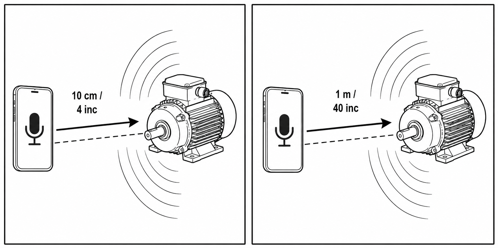

This application runs entirely in your browser (e.g. Chrome). It does not require an internet connection and does not retain any of your data. Data is only shared if you choose to email your audio recording—in that case, only the file you attach is shared. The app uses your device's computational resources. Internet is only needed to load the page initially. Once loaded, recording works offline. No audio is stored or transmitted unless you save it locally or attach it to an email yourself.

Two recordings are necessary to ensure that the sound comes from the hypothesized source. The first must be made at 4 in / 10 cm and the second at 40 in / 1 m.
Filename includes description, distance, audio input name, local date/time, UTC offset, and device type (e.g. induction_motor_drive_end_10cm_4in_USB_PnP_Sound_Device_2026-06-12_15-42-07_+2_Android_recording.wav).
Audio input: not selected yet
Recording uses raw PCM on all devices (no codec, AGC/NS/EC off). Save audio, then send an email to sebastian.carta@tyche-lab.com — attach your recordings/photos.